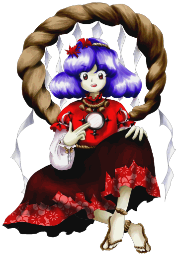

Kanako é frequentemente vista como:
Ambiciosa – busca constantemente expandir sua influência e a fé no templo.
Dominante – possui uma presença forte e age como uma líder nata.
Inovadora – não tem medo de adotar métodos modernos e tecnológicos para atingir seus fins.
Ela transmite a sensação de uma divindade imponente que exige respeito, mas que age com o pragmatismo de um político.
🧠 Mente visionária
Kanako é conhecida por ser extremamente inteligente:
Toma decisões calculadas
Foca em objetivos de longo prazo
Entende dinâmicas de poder complexas
Apesar de parecer agressiva em seus planos, tudo faz parte de sua estratégia de sobrevivência.
🎭 Comportamento majestoso
Ela demonstra traços típicos de uma deusa de alto escalão:
Gosta de demonstrações de poder
Faz alianças grandiosas para fortalecer sua posição
Pode ser condescendente com quem desafia sua autoridade
Seu jeito focado em resultados define sua personalidade.
🌿 Vida na montanha
Kanako vive no topo da Montanha dos Youkais:
Passa muito tempo gerenciando o Templo Moriya
Interage com os tengus e kappa da região
Protege seu território através de demonstrações de milagres
Ela prefere ambientes onde o avanço e o progresso possam andar juntos com a fé.
🤝 Relação com os outros
Kanako interage de forma estratégica com Gensokyo:
Divide o templo de forma complexa com Suwako Moriya
Orienta e envia Sanae Kochiya para coletar fé
Desafia o status quo de Gensokyo para garantir seu espaço
Apesar de sua postura intimidadora, suas intenções visam o bem-estar do templo e de seus seguidores.
Deusa do vento e da chuva
Kanako é a deusa principal do Templo Moriya, passando seus dias criando planos para angariar mais fé dos humanos e youkais.
Líder e estrategista da montanha
Mesmo sendo uma divindade, Kanako atua quase como uma administradora de corporação, negociando com os habitantes da Montanha Youkai.
Criação de milagres (Vento e Chuva)
O principal poder de Kanako é manipular os céus e os elementos:
Pode invocar tempestades e ventanias massivas
Cria barreiras e projéteis de pura energia divina
Consegue alterar as condições climáticas de regiões inteiras
Esse poder se expande drasticamente com a quantidade de fé obtida.
Manipulação da tecnologia divina
Ela pode introduzir e adaptar conceitos externos avançados (como energia nuclear) em rituais espirituais.
Voo
Como uma deusa celestial, Kanako voa com imponência, cercada por seu característico arco de espelhos (shimenawa).
Resistência e regeneração divina
Por possuir um corpo divino, Kanako tem uma durabilidade extrema e pode se restabelecer contanto que sua essência receba adoração.
Mesmo não sendo a única força da montanha, sua determinação implacável e milagres meteorológicos fazem dela uma deusa intimidadora.

Espécie:Deusa
Título:Deusa Independente e Inflexível (Wild and Horned Hermit)